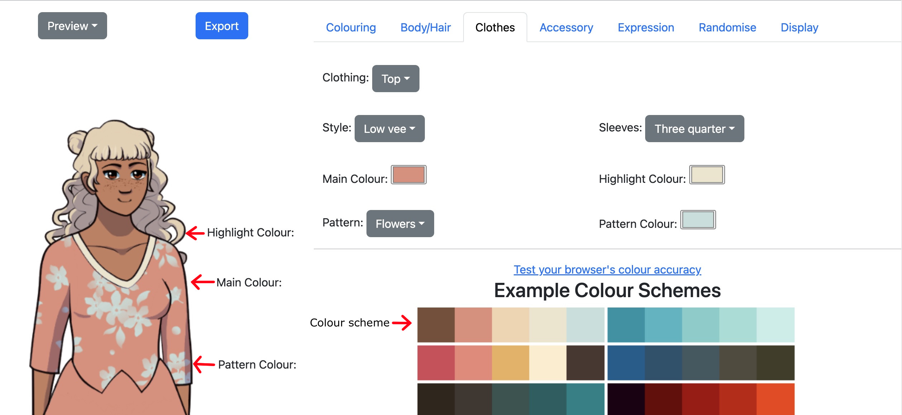

Spritemaker Example/Tutorial
Tags: posts, from dreamwidth, sprites, tutorial, art, spritemaker, my games,
This post goes through the process of making a visual novel sprite using the Spiral Atlas Spritemaker. For more detailed documentation, check out the Guide.
Getting Started
For this tutorial, I'm going to design Dolly, a young woman in contemporary Western clothes.The first step is to open the Spritemaker. I am using Chrome on my Mac laptop, because testing revealed that my version of Firefox messes with colours, and Safari's colour picker is unhelpful.
Here's the character who was randomly generated when I opened the page.
Before doing anything else, let's zoom out to see the whole sprite by going into the Display tab and setting scale to 40% and crop to 0.
Randomising and Presets
Let's try the Randomise tab.
First off, I can try the various Appearance Presets. Student isn't bad, but I want something more feminine.
So let's create a random character.
Since Dolly is a human in contemporary clothes, I leave the Fantasy Body/Colouring and Fantasy/Historic Outfit boxes unchecked. Since she's a conventionally presenting woman, I set gender presentation to feminine.
After pressing "Randomise All" a few times I find a character I like the look of.
I want to tweak the colours, so I click the outfit: colours button a few times until I get something I like more.
I could similarly randomise her facial features, colouring and outfit with the relevant buttons.
But instead, let's tweak things manually.
To see what I'm doing, first I'll go into the Accessory tab and set the hat and eyewear to "none". I'll also go into Display and set the scale back to 80%, since I don't need to see the legs right now.
Colour picking
I'm going to start by using the colouring from DejiNyucu's Agustina sprite.
Basing a design on other people's art can have issues with plagiarism, but Agustina's design is open source (and was in fact the base for some of the spritemaker's art).
So, I open up a picture of Agustina in a separate window, and go into the Colouring tab of the Spritemaker. I click on the skin colour button and colour pick from the image of Agustina.
Here's the final result of colouring picking the hair, eyes and skin:
I decide I don't like those eyes and hair colours for Dolly.
For the hair, I'll pick from the example hair colours below.
For the eyes, I'll tweak the colour in the colour picker itself. I made it a little darker using the gradient, and a little more red using the spectrum.
If you can't get the colour picker and the colour you want onscreen at the same time, use your browser's inbuilt zoom out function.
Body and Hair
First let's tweak Dolly's hair.
Hair is divided into layers:
- Hair Back: extra decorations behind the main bulk of hair, like buns and ponytails.
- Hairstyle: the main bulk of the hair.
- Fringe/bangs: the hair at the front.
- Sidelocks: little extra bits of hair on either side of the fringe.
- Facial hair: beard/mustache etc. Not relevant to this character.
Now let's tweak the body shape.
- Head Shape: The length of the head and shape of the chin.
- Nose Shape: Shape of the nose.
- Chest Shape: The shape of the breasts/pecs.
- Eye Shape: Overall eye shape, seperate to expression. "Long eyelashes" are the most feminine looking, while "short eyelashes" are the most masculine.
- Ears: You can make the ears be pointy or even vanish, but won't generally edit them for a non-fantasy character.
- Complexion: Freckles, moles, wrinkles etc.
- Waist Cinch: Whether clothes are pulled in at the waist. "Hourglass" tends to make characters look more feminine.
Clothes
Every accessory and piece of clothing has a colour, highlight colour, pattern, and pattern colour. Many don't actually display the highlight colour. One way to pick colours is from the example colour schemes.
The Top, Overshirt, and Coat also have a "sleeves" option, though some specific items don't actually have sleeves.
I picked the colours for this Top from the top right colour scheme. Notice that the highlight colour shows up along the neckline.
The Bottom has a Waistline, which has options like belt, suspenders, etc.
Here I decreased the scale again to see the skirt and shoes better. The Bottom highlight colour shows up on the belt. The pattern colour doesn't show up since there's no pattern selected.
Now that I've finished choosing the clothes, I've decided I like the hourglass waist cinch after all, so let's add that back.
Accessories
Accessories work the same way as clothes, but nothing has sleeves or a waistline.
Expression
For now I'll just give Dolly two expressions, Neutral and Happy. The dollmaker displays the Neutral expression by default, so we'll start there.
I set the scale to 100% to see the face clearly, then try out the various presets. I decide I like the Neutral expression in the Arch expression preset.
But I want to tweak it slightly, so I change the mouth.
Now to check the happy expression:
Yeah, that looks fine!
If I go back to Neutral, it will still show my custom Neutral expression.
Display
Now that I have designed my character, I use the Display tab to decide how to edit the image before exporting.
If you want a really crisp sprite, I reccomend exporting at 100% and (if neccesary) resizing in a proper image program.
But for the sake of this tutorial, I'll export at a scale of 80%, and crop 300 pixels from the bottom. I zoomed out in Chrome to show the cropping.
I can make a Mysterious Black Sillouhette using the solid colour effect.
Renpy has code to do this sort of thing in-game, but it can be useful to check out the sillouhette during the character design stage.
Exporting Images
To export an image, select the image mode in the drop down above the sprite, then click the Export button. Make sure to give each image a different, informative name.
Only export in Preview mode if you want a flat image for something like a user icon or a black Sillouhette.
To make a visual novel sprite with multiple expressions, I need to export the images as layers. These layers get put back together in the visual novel code.
First, the head.
Then the happy and neutral expressions, switching between them in the Expression tab.
Then the outfit.
I now have the images dolly_head.png, dolly_mood_neutral.png, dolly_mood_happy.png, and dolly_outfit.png. Using the word "expression" in Ren'py variable names can cause issues, which is why I used "mood".
And that should be everything I need to make a Dolly visual novel sprite!
Saving and Loading
Before I close the dollmaker, I make sure to click the "Export Choices" button and save my choices as "dolly". This will create a file called "dolly.json".
If I later decide I want to load Dolly back up and edit her some more, I can load dolly.json via the "Choose File" dialogue.
Unfortunately, save files are a bit buggy, and often break when the code gets updated. If you're having trouble loading your character correctly, you can open the save file in a text editor and copy across the values manually.
For example, if we scroll through dolly.json we can find this description of the Top, giving the choices and colours:
//name: top //value: low vee //colour1: #e08e79 //colour2: #ece5ce //patterncolour: #c5e0dc //pattern: flowers
To replicate this in the dollmaker, we would set the Top to to "Low vee", with a "flowers" pattern, etc.
Ren'py code
In Ren'py, you would create a Dolly sprite like this:
layeredimage dolly:
always:
"dolly_head"
group mood:
attribute neutral default:
"dolly_mood_neutral.png"
attribute happy:
"dolly_mood_happy.png"
always:
"dolly_outfit"
To download an example game using this code, check out the Spritemaker itchio page.